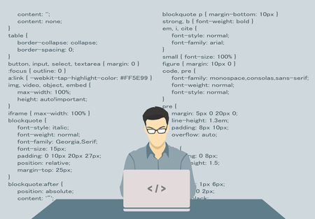
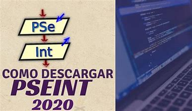
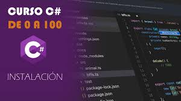
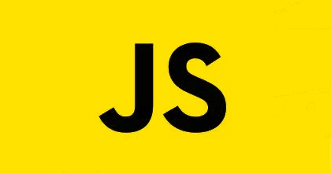
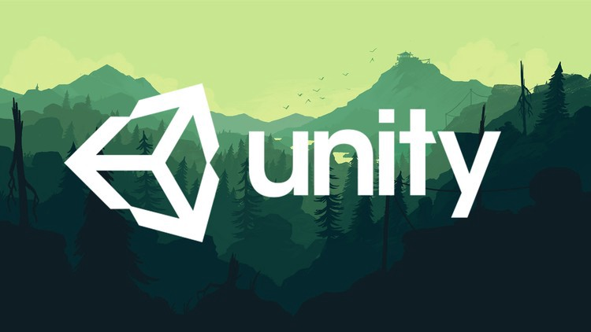
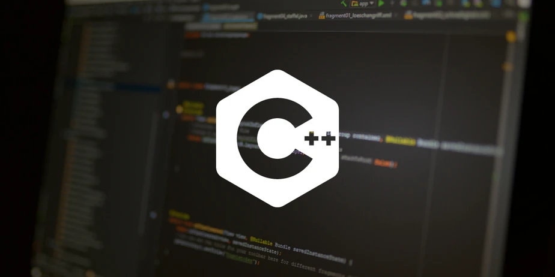
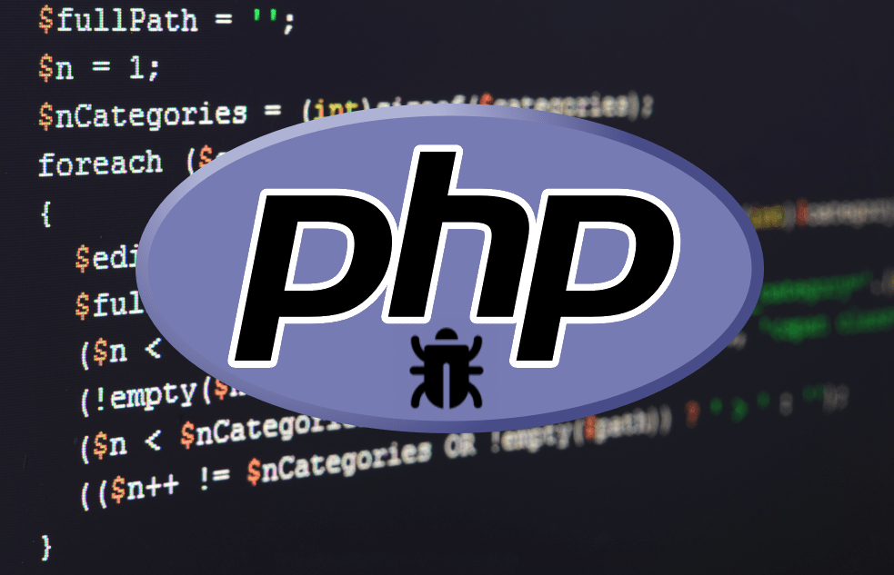
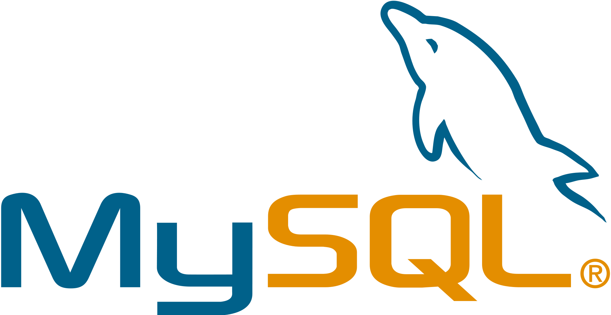

Mediante este repositorio pretendemos brindar conocimiento con el fin de guiarte en la comprención de la lógica de las estructuras de la programación, finalmente esperamos sirva este repositorio como un aporte a tu desarrollo como programador. LINK DEL REPOSITORIO AQUI
INICIO

¿QUIÉNES SOMOS?
Somos un grupo de estudiantes univeristarios de la carrera de Ingeniería en Sistemas de la
Información. Brindamos soluciones informáticas garantizando calidad, eficacia y sobretodo un
excelente trabajo, la pasión es nuestro principal motor, adicionalmente extendemos
a todos ustedes diversos tutoriales informáticos que pueden servir para nutrir de
conocimiento, inspiración y motivación.
La imagen de nuestro trabajo es de suma importancia para nosotros, por lo que siempre reflejamos
satisfacción en los distintos trabajos realizados hacia nuestros clientes, adicionalmente disponemos
de soporte técnico dentro de distintos campos de la informática.
MISIÓN
Instruir a nuestros clientes y brindar distintos servicios con herramientas de software implementando creatividad, eficiencia e innovación a los distintos proyectos que se presenten.
VISIÓN
Siguiendo con nuestro objetivo principal, nos observamos a futuro como un grupo de programadores expertos unido con un canal fuertemente constituído en YouTube, con una metodología de trabajo bien formada y con diversos proyectos tecnológicos cumplidos y por cumplir.
SERVICIOS
TUTORÍAS ACADÉMICAS
Brindamos el servicio de tutorías académicas en modalidad virtual, donde te brindaremos apoyo, guía y conocimiento dentro del mundo de la programación.
Adicionalmente en este segmento podrás encontrar acceso a nuestros videos de YouTube dónde tenemos tutoriales sobre programación y tecnología, que se encuentra en constante actividad. Si tienes dudas de algún tema de programación, no dudes en contactarnos mediante nuestras Redes Sociales.
CREACIÓN Y DISEÑO DE PÁGINAS WEB
Somos excelentes creadores de contenido, con prioridades y enfoques dinamicos al momento de crear un sitio web, mediante el uso de los lenguajes de etiquetas html, css y javascript. Para más información ponte en contacto con nuestros programadores. Te adjuntamos una galería con algunos trabajos ya realizados:
CURSOS GRATIS
Para acceder a cursos gratuitos de distinta índole, como temas de diseño gráfico, programación, arquitectura, entre otros: Accede a este grupo de telegram donde encontraras lo que necesitas.
Cualquier aporte no duden en contactarnos en nuestras Redes Sociales.
Repositorio
Bienvenidos al Repositorio del PODO TEAM, donde encontraras por niveles y secciones los distintos programas realizados, con el fin de contribuir a la comunidad de programadores.

PSeInt es una aplicación informática de software libre que sirve para escribir algoritmos
pseudocódigo y ejecutarlos, adicionalmente genera diagramas de flujo de dichos algoritmos.
Es una excelente alternativa a cualquier otro lenguaje para aprender a programar.
A través de él se pueden escribir los algoritmos con un lenguaje más próximo al castellano.
Una vez que tienes un algoritmo escrito en pseudocódigo lo exportar en cualquier otro lenguaje,
facilitando la comprensión de los códigos.
Utilizar esta aplicación puede ser una buena manera de empezar para aprender a programar.
En su página oficial puedes
descargar PSeInt.
Ejercicios:
Aquí les compartimos un repositorio completo, con ejercicios para guiarte y brindarte ayuda en tu introducción al mundo de la programación, adicionalmente tenemos dentro de cada fichero las indicaciones y los objetivos de cada ejercicio. Repositorio PSeInt.

C# (en inglés es pronunciado como “C Sharp”, en español como “C Números”), es un lenguaje de programación
diseñado por la conocida compañía Microsoft. Fue estandarizado hace un tiempo por la ECMA e ISO dos de las
organizaciones más importantes a la hora de crear estándares para los servicios o productos. El lenguaje de
programación C# está orientado a objetos.
Utilizar esta
aplicación puede ser una buena manera de empezar para aprender a programar. En su página oficial puedes
descargar C#.
Las estructuras de datos estudian conceptos sobre programación, y no sobre un lenguaje de programación en específico, por lo que cada lenguaje puede tener diferentes implementaciones de estructuras de datos. En este post no cubriré el tema de complejidad algorítmica de las estructuras, pero si te guiaremos con un repositorio adecuado que hacen referencia a dicha complejidad. LINK DEL REPOSITORIO AQUI
En un lenguaje de procedimientos, no hay ningún enlace entre los datos y los procedimientos que los manejan.
Por el contrario en un lenguaje orientado a objetos agrupamos los datos con el código que lo manejan. Las CLASES
son la representación simbólica de los OBJETOS. Las CLASES describen campos, propiedades, métodos y eventos.
Haciendo una analogía con el trabajo de un ingeniero, la CLASE se correspondería con el plano de un motor y el
OBJETO serían los diferentes motores que se construyen a partir de ese plano. Crear un OBJETO a partir de un una
clase es lo que se llama INSTANCIAR.
Las tres propiedades de la ORIENTACIÓN A OBJETOS son:
ENCAPSULACIÓN:
Agrupa datos y códigos en una única clase.
HERENCIA:
Permite la creación de una nueva clase a partir de otra ya existente, de la cual se hereda todo y puede personalizarse añadiendo o modificando propiedades y métodos heredados. Las clases creadas a partir de otras existentes se llaman CLASES DERIVADAS.
POLIMORFISMO:
Gracias a esta propiedad se pueden utilizar diferentes clases de forma intercambiable. Otros conceptos asociados al polimorfismo son la SOBRECARGA, SOBREESCRITURA y la OCULTACIÓN. LINK DEL REPOSITORIO AQUI

JavaScript es el único lenguaje de programación que funciona en los navegadores de forma nativa . Por tanto se
utiliza como complemento de HTML y CSS para crear páginas webs. No conviene confundir JavaScript con Java, que es
un lenguaje de programación muy diferente.
Con este lenguaje de programación del lado del cliente (no en el servidor) podemos crear efectos y animaciones sin
ninguna interacción, o respondiendo a eventos causados por el propio usuario tales como botones pulsados y
modificaciones del DOM (document object model). Por tanto, nada tiene que ver con el lenguaje de programación Java, ya
que su principal función es ayudar a crear páginas webs dinámicas.
Mediante este repositorio pretendemos brindar conocimiento, ayudar a conformar la lógica de las estructuras de la programación, finalmente esperamos sirva este repositorio como un aporte a tu desarrollo como programador. LINK DEL REPOSITORIO AQUI
Lo primero que debemos tener claro es la definición de “estructura de datos” y que a partir de esta definición parten otros conceptos y tipos. Que las estructuras de datos se estudian como conceptos sobre programación, y no sobre un lenguaje de programación en específico, por lo que cada lenguaje puede tener diferentes implementaciones de estructuras de datos. En este post no cubriré el tema de complejidad algorítmica de las estructuras, pero si mencionaré conceptos que hacen referencia a dicha complejidad, sin llegar a fondo. LINK DEL REPOSITORIO AQUI
En un lenguaje de procedimientos, no hay ningún enlace entre los datos y los procedimientos que los manejan.
Por el contrario en un lenguaje orientado a objetos agrupamos los datos con el código que lo manejan. Las CLASES
son la representación simbólica de los OBJETOS. Las CLASES describen campos, propiedades, métodos y eventos.
Haciendo una analogía con el trabajo de un ingeniero, la CLASE se correspondería con el plano de un motor y el
OBJETO serían los diferentes motores que se construyen a partir de ese plano. Crear un OBJETO a partir de un una
clase es lo que se llama INSTANCIAR.
Las tres propiedades de la ORIENTACIÓN A OBJETOS son:
ENCAPSULACIÓN:
Agrupa datos y códigos en una única clase.
HERENCIA:
Permite la creación de una nueva clase a partir de otra ya existente, de la cual se hereda todo y puede personalizarse añadiendo o modificando propiedades y métodos heredados. Las clases creadas a partir de otras existentes se llaman CLASES DERIVADAS.
POLIMORFISMO:
Gracias a esta propiedad se pueden utilizar diferentes clases de forma intercambiable. Otros conceptos asociados al polimorfismo son la SOBRECARGA, SOBREESCRITURA y la OCULTACIÓN. LINK DEL REPOSITORIO AQUI

Quieres empezar a aprender a codificar en Unity para poner en marcha tu primer juego, pero no sabes por dónde
comenzar. Nosotros asumimos el esfuerzo. Lo que sigue es un desglose de los elementos de scripting en Unity y
algo de material didáctico que puedes usar para realizar proyectos más avanzados como "Space Shooter". Esto
debería cubrir tus necesidades en las siguientes áreas: los rudimentos de la codificación, como variables,
funciones y clases, y cómo utilizarlas.
Juegos 2d:
Juegos 3d:

Mediante este repositorio pretendemos brindar conocimiento, ayudar a conformar la lógica de las estructuras de la programación, finalmente esperamos sirva este repositorio como un aporte a tu desarrollo como programador. LINK DEL REPOSITORIO AQUI
Lo primero que debemos tener claro es la definición de “estructura de datos” y que a partir de esta definición parten otros conceptos y tipos. Que las estructuras de datos se estudian como conceptos sobre programación, y no sobre un lenguaje de programación en específico, por lo que cada lenguaje puede tener diferentes implementaciones de estructuras de datos. En este post no cubriré el tema de complejidad algorítmica de las estructuras, pero si mencionaré conceptos que hacen referencia a dicha complejidad, sin llegar a fondo. LINK DEL REPOSITORIO AQUI
En un lenguaje de procedimientos, no hay ningún enlace entre los datos y los procedimientos que los manejan.
Por el contrario en un lenguaje orientado a objetos agrupamos los datos con el código que lo manejan. Las CLASES
son la representación simbólica de los OBJETOS. Las CLASES describen campos, propiedades, métodos y eventos.
Haciendo una analogía con el trabajo de un ingeniero, la CLASE se correspondería con el plano de un motor y el
OBJETO serían los diferentes motores que se construyen a partir de ese plano. Crear un OBJETO a partir de un una
clase es lo que se llama INSTANCIAR.
Las tres propiedades de la ORIENTACIÓN A OBJETOS son:
LINK DEL REPOSITORIO AQUI
PHP (acrónimo recursivo de PHP: Hypertext Preprocessor) es un lenguaje de código abierto muy popular especialmente adecuado para el desarrollo web y que puede ser incrustado en HTML. Bien, pero ¿qué significa realmente? Un ejemplo nos aclarará las cosas: En lugar de usar muchos comandos para mostrar HTML (como en C o en Perl), las páginas de PHP contienen HTML con código incrustado que hace "algo" (en este caso, mostrar "¡Hola, soy un script de PHP!). El código de PHP está encerrado entre las etiquetas especiales de comienzo y final que permiten entrar y salir del "modo PHP". Lo que distingue a PHP de algo del lado del cliente como Javascript es que el código es ejecutado en el servidor, generando HTML y enviándolo al cliente. El cliente recibirá el resultado de ejecutar el script, aunque no se sabrá el código subyacente que era. El servidor web puede ser configurado incluso para que procese todos los ficheros HTML con PHP, por lo que no hay manera de que los usuarios puedan saber qué se tiene debajo de la manga. Lo mejor de utilizar PHP es su extrema simplicidad para el principiante, pero a su vez ofrece muchas características avanzadas para los programadores profesionales. No sienta miedo de leer la larga lista de características de PHP. En unas pocas horas podrá empezar a escribir sus primeros scripts. Aunque el desarrollo de PHP está centrado en la programación de scripts del lado del servidor, se puede utilizar para muchas otras cosas. Siga leyendo y descubra más en la sección ¿Qué puede hacer PHP?, o vaya directo al tutorial introductorio si solamente está interesado en programación web.

Mediante este repositorio pretendemos brindar conocimiento, ayudar a conformar la lógica de las estructuras de la programación, finalmente esperamos sirva este repositorio como un aporte a tu desarrollo como programador. LINK DEL REPOSITORIO AQUI
Lo primero que debemos tener claro es la definición de “estructura de datos” y que a partir de esta definición parten otros conceptos y tipos. Que las estructuras de datos se estudian como conceptos sobre programación, y no sobre un lenguaje de programación en específico, por lo que cada lenguaje puede tener diferentes implementaciones de estructuras de datos. En este post no cubriré el tema de complejidad algorítmica de las estructuras, pero si mencionaré conceptos que hacen referencia a dicha complejidad, sin llegar a fondo. LINK DEL REPOSITORIO AQUI
En un lenguaje de procedimientos, no hay ningún enlace entre los datos y los procedimientos que los manejan.
Por el contrario en un lenguaje orientado a objetos agrupamos los datos con el código que lo manejan. Las CLASES
son la representación simbólica de los OBJETOS. Las CLASES describen campos, propiedades, métodos y eventos.
Haciendo una analogía con el trabajo de un ingeniero, la CLASE se correspondería con el plano de un motor y el
OBJETO serían los diferentes motores que se construyen a partir de ese plano. Crear un OBJETO a partir de un una
clase es lo que se llama INSTANCIAR.
Las tres propiedades de la ORIENTACIÓN A OBJETOS son:
LINK DEL REPOSITORIO AQUI
Node.js es un entorno de tiempo de ejecución de JavaScript (de ahí su terminación en .js haciendo alusión al lenguaje JavaScript). Este entorno de tiempo de ejecución en tiempo real incluye todo lo que se necesita para ejecutar un programa escrito en JavaScript. También aporta muchos beneficios y soluciona muchísimos problemas, por lo que sería más que interesante realizar nuestro curso de Node.js para obtener las bases, conceptos y habilidades necesarias que nos motiven a profundizar en sus opciones e iniciar la programación. Node.js fue creado por los desarrolladores originales de JavaScript. Lo transformaron de algo que solo podía ejecutarse en el navegador en algo que se podría ejecutar en los ordenadores como si de aplicaciones independientes se tratara. Gracias a Node.js se puede ir un paso más allá en la programación con JavaScript no solo creando sitios web interactivos, sino teniendo la capacidad de hacer cosas que otros lenguajes de secuencia de comandos como Python pueden crear. Tanto JavaScript como Node.js se ejecutan en el motor de tiempo de ejecución JavaScript V8 (V8 es el nombre del motor de JavaScript que alimenta Google Chrome. Es lo que toma nuestro JavaScript y lo ejecuta mientras navega con Chrome). Este motor coge el código JavaScript y lo convierte en un código de máquina más rápido. El código de máquina es un código de nivel más bajo que la computadora puede ejecutar sin necesidad de interpretarlo primero, ignorando la compilación y por lo tanto aumentando su velocidad.

Backend de paginas web:
Falta llenar por Jack
En programación es prácticamente inevitable trabajar con algún tipo de sistema de gestión de bases de datos. Cualquier programa que imaginemos tarde o temprano necesitará almacenar datos en algún lugar, como mínimo para poder almacenar la lista de usuarios autorizados, sus permisos y propiedades. MySQL es el sistema de gestión de bases de datos relacional más extendido en la actualidad al estar basada en código abierto. Desarrollado originalmente por MySQL AB, fue adquirida por Sun MicroSystems en 2008 y esta su vez comprada por Oracle Corporation en 2010, la cual ya era dueña de un motor propio InnoDB para MySQL. MySQL es un sistema de gestión de bases de datos que cuenta con una doble licencia. Por una parte es de código abierto, pero por otra, cuenta con una versión comercial gestionada por la compañía Oracle. Las versiones Enterprise, diseñadas para aquellas empresas que quieran incorporarlo en productos privativos, incluyen productos o servicios adicionales tales como herramientas de monitorización y asistencia técnica oficial. Características de MySQL MySQL presenta algunas ventajas que lo hacen muy interesante para los desarrolladores. La más evidente es que trabaja con bases de datos relacionales, es decir, utiliza tablas múltiples que se interconectan entre sí para almacenar la información y organizarla correctamente. Al ser basada en código abierto es fácilmente accesible y la inmensa mayoría de programadores que trabajan en desarrollo web han pasado usar MySQL en alguno de sus proyectos porque al estar ampliamente extendido cuenta además con una ingente comunidad que ofrece soporte a otros usuarios. Pero estas no son las únicas características como veremos a continuación: Arquitectura Cliente y Servidor: MySQL basa su funcionamiento en un modelo cliente y servidor. Es decir, clientes y servidores se comunican entre sí de manera diferenciada para un mejor rendimiento. Cada cliente puede hacer consultas a través del sistema de registro para obtener datos, modificarlos, guardar estos cambios o establecer nuevas tablas de registros, por ejemplo. Compatibilidad con SQL: SQL es un lenguaje generalizado dentro de la industria. Al ser un estándar MySQL ofrece plena compatibilidad por lo que si has trabajado en otro motor de bases de datos no tendrás problemas en migrar a MySQL. Vistas: Desde la versión 5.0 de MySQL se ofrece compatibilidad para poder configurar vistas personalizadas del mismo modo que podemos hacerlo en otras bases de datos SQL. En bases de datos de gran tamaño las vistas se hacen un recurso imprescindible. Procedimientos almacenados. MySQL posee la característica de no procesar las tablas directamente sino que a través de procedimientos almacenados es posible incrementar la eficacia de nuestra implementación. Desencadenantes. MySQL permite además poder automatizar ciertas tareas dentro de nuestra base de datos. En el momento que se produce un evento otro es lanzado para actualizar registros o optimizar su funcionalidad. Transacciones. Una transacción representa la actuación de diversas operaciones en la base de datos como un dispositivo. El sistema de base de registros avala que todos los procedimientos se establezcan correctamente o ninguna de ellas. En caso por ejemplo de una falla de energía, cuando el monitor falla u ocurre algún otro inconveniente, el sistema opta por preservar la integridad de la base de datos resguardando la información. Ventajas de usar MySQL Descritas las principales características de MySQL es fácil ver sus ventajas. MySQL es una opción razonable para ser usado en ámbito empresarial. Al estar basado en código abierto permite a pequeñas empresas y desarrolladores disponer de una solución fiable y estandarizada para sus aplicaciones. Por ejemplo, si se cuenta con un listado de clientes, una tienda online con un catálogo de productos o incluso una gran selección de contenidos multimedia disponible, MySQL ayuda a gestionarlo todo debida y ordenadamente.

Programas: